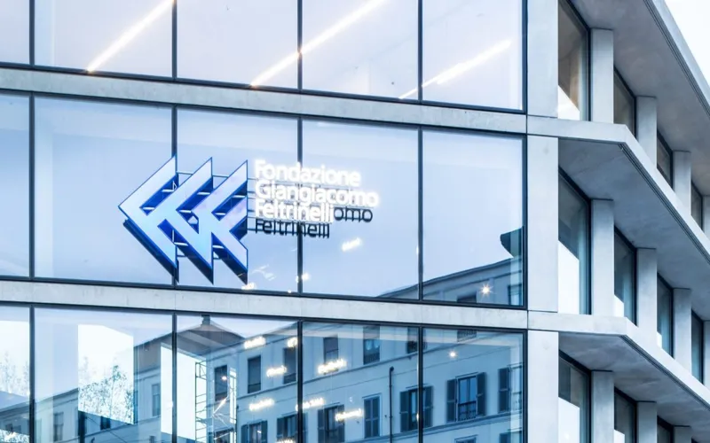
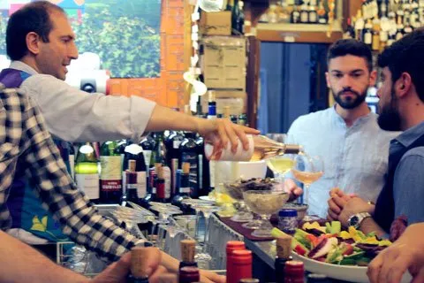

moda
10 Corso Como
Concept store fondato nel 1990 da Carla Sozzani con abbigliamento, design, libri, galleria e caffè in cortile.
Corso Como 10, 20154 Milano · 3 min a piedi · 160 m
Percorso a piediIl quartiere · Porta Nuova, Garibaldi, Isola, Corso Como
Il Tocq sta in mezzo al distretto degli affari di Milano: 15 sedi aziendali, i treni e la metro, 12 indirizzi dove mangiare e bere e 8 negozi, tutti a pochi minuti a piedi.

La mappa
I cerchi segnano 5, 10 e 15 minuti a piedi dal portone del Tocq. Scegli un tema, trascina la mappa, tocca un punto o un nome; "Percorso" apre le indicazioni a piedi.
 IsolaPorta NuovaBreraMoscovaPaolo SarpiCentrale
IsolaPorta NuovaBreraMoscovaPaolo SarpiCentraleMappa © OpenStreetMap contributors
Distanze a piedi stimate dalla linea d'aria (+30% per le strade, 80 metri al minuto). Indirizzi verificati a ottobre 2026. Base cartografica © OpenStreetMap contributors.
Per chi lavora in Porta Nuova
Se la tua riunione è in una di queste sedi, dal Tocq ci arrivi a piedi, senza taxi e senza metro. Per accordi aziendali e tariffe dedicate: scrivici.
| Azienda | Sede | Settore | A piedi |
|---|---|---|---|
| Accenture – sede di Milano | Torre Bonnet (Corso Como Place) | consulenza | 2 min |
| Bending Spoons – sede centrale | Complesso Corso Como Place | tecnologia / software | 2 min |
| Microsoft Italia – Microsoft House | Microsoft House | tecnologia | 5 min |
| MAIRE (Maire Tecnimont) | Torri Garibaldi | ingegneria / energia | 5 min |
| UniCredit – sede centrale | UniCredit Tower (Torre A) | banca | 5 min |
| Amazon Italia – uffici corporate | Viale Monte Grappa 3/5, 20124 Milano | e-commerce / tecnologia | 6 min |
| Gruppo Unipol – sede milanese | Torre Unipol | assicurazioni | 7 min |
| Google Italy | Isola Building C | tecnologia | 8 min |
| COIMA SGR | Edificio Coima, Piazza Gae Aulenti | immobiliare | 8 min |
| Samsung Electronics Italia – Samsung District | Samsung District | tecnologia | 12 min |
| SAP Italia | Palazzo Lybra | tecnologia / software | 12 min |
| KPMG – sede di Milano | Gioia 20 (I Portali, torre Est) | consulenza / revisione | 13 min |
| BNP Paribas / BNL – sede italiana | Torre Diamante | banca | 13 min |
| Intesa Sanpaolo – Gioia 22 | Gioia 22 | banca | 15 min |
| Regione Lombardia | Palazzo Lombardia | pubblica amministrazione | 15 min |

Corso Como · a 50 metri
Finita la riunione, il quartiere è sotto casa.
La guida allo shopping
Moda, design, libri e cibo da portare a casa, fra Corso Como, Corso Garibaldi e Gae Aulenti.
Concept store fondato nel 1990 da Carla Sozzani con abbigliamento, design, libri, galleria e caffè in cortile.
Corso Como 10, 20154 Milano · 3 min a piedi · 160 m
Percorso a piedi
Libreria specializzata in saggistica al piano terra della Fondazione, che organizza anche incontri e dibattiti.
Viale Pasubio 5, 20154 Milano · 4 min a piedi · 280 m
Percorso a piediMercato alimentare italiano con ristoranti interni nell'ex Teatro Smeraldo; aperto tutti i giorni 8-23.
Piazza XXV Aprile 10, 20121 Milano · 5 min a piedi · 350 m
Percorso a piediNegozio monomarca di abbigliamento e calzature sportive affacciato su Piazza Gae Aulenti.
Piazza Gae Aulenti 6, 20154 Milano · 5 min a piedi · 400 m
Percorso a piediVia di negozi tra Moscova e Brera con marchi streetwear e outdoor come Supreme, Carhartt WIP e Stüssy.
Corso Garibaldi, 20121 Milano · 13 min a piedi · 1,0 km
Percorso a piedi
Enoteca storica fondata nel 1896 con vendita di bottiglie e calici al banco; chiusa il lunedì.
Via Paolo Sarpi 30, 20154 Milano · 14 min a piedi · 1,0 km
Percorso a piediMercato coperto storico del 1946, riaperto con banchi alimentari e cucina dal mattino alla sera.
Piazzale Lagosta 7, 20159 Milano · 14 min a piedi · 1,1 km
Percorso a piediMercato gastronomico su due piani dentro la Stazione Centrale, con botteghe di artigiani del cibo.
Via Giovanni Battista Sammartini 2, 20125 Milano · 24 min a piedi · 1,9 km
Percorso a piediLa guida al food
Gli indirizzi che consigliamo a chi dorme da noi, dal caffè prima della riunione alla cena. Se serve un tavolo, lo prenota la reception.

Panetteria e caffetteria con lievitati, pizza e focacce sfornati durante la giornata, di fronte a Eataly.
Piazza XXV Aprile 5, 20121 Milano · 3 min a piedi · 230 m
Percorso a piedi
Caffetteria specialty con caffè tostato in proprio; Tre Tazzine e Tre Chicchi nella guida Bar d'Italia 2026.
Via Solferino 27, 20121 Milano · 8 min a piedi · 620 m
Percorso a piedi
Caffè aperto dalla colazione a tarda sera, noto anche per l'aperitivo all'aperto su Largo La Foppa.
Corso Garibaldi 105 (Largo La Foppa), 20121 Milano · 8 min a piedi · 640 m
Percorso a piediPasticceria di stampo francese nel quartiere Isola, con viennoiserie e monoporzioni.
Via Luigi Porro Lambertenghi 15, 20159 Milano · 12 min a piedi · 930 m
Percorso a piedi
Cucina creativa in un palazzo Liberty vicino a Porta Nuova; aperto a pranzo e cena dal lunedì al venerdì.
Viale Monte Grappa 6, 20124 Milano · 8 min a piedi · 590 m
Percorso a piedi
Cucina milanese e lombarda dello chef Cesare Battisti in un ex deposito tranviario davanti alla BAM; segnalato dalla Guida Michelin.
Via Gaetano De Castillia 28, 20124 Milano · 11 min a piedi · 800 m
Percorso a piedi
Bar e ristorante sul tetto dell'ex palazzo Enel, con due piscine e vista sullo skyline di Porta Nuova.
Via Ceresio 7, 20154 Milano · 8 min a piedi · 630 m
Percorso a piediWine bar con oltre 600 etichette, in gran parte di piccoli produttori, e salotto con poltrone e divani.
Via Panfilo Castaldi 24, 20124 Milano · 23 min a piedi · 1,8 km
Percorso a piediTrattoria storica del 1880 con piatti milanesi come risotto al salto, ossobuco e cotoletta; chiusa la domenica.
Viale Pasubio 10, 20154 Milano · 4 min a piedi · 280 m
Percorso a piedi
Pizzeria e cocktail bar aperto la sera; settimo nella classifica Top Pizza 2026.
Via Solferino 33, 20121 Milano · 8 min a piedi · 570 m
Percorso a piedi
Ristorante di Andrea Berton con una stella Michelin (guida 2026), cucina italiana contemporanea.
Via Mike Bongiorno 13, 20124 Milano · 11 min a piedi · 820 m
Percorso a piedi
Pizzeria con impasti a lievito madre e farine biologiche, servita a spicchi da condividere.
Via Sebenico 21, 20124 Milano · 11 min a piedi · 820 m
Percorso a piediFoto e loghi dai siti ufficiali di locali e aziende, citati come referenze. Da autorizzare con ciascuno prima della pubblicazione
Domande frequenti
Per un consiglio sul momento, la reception risponde 24 ore su 24: +39 02 62071.